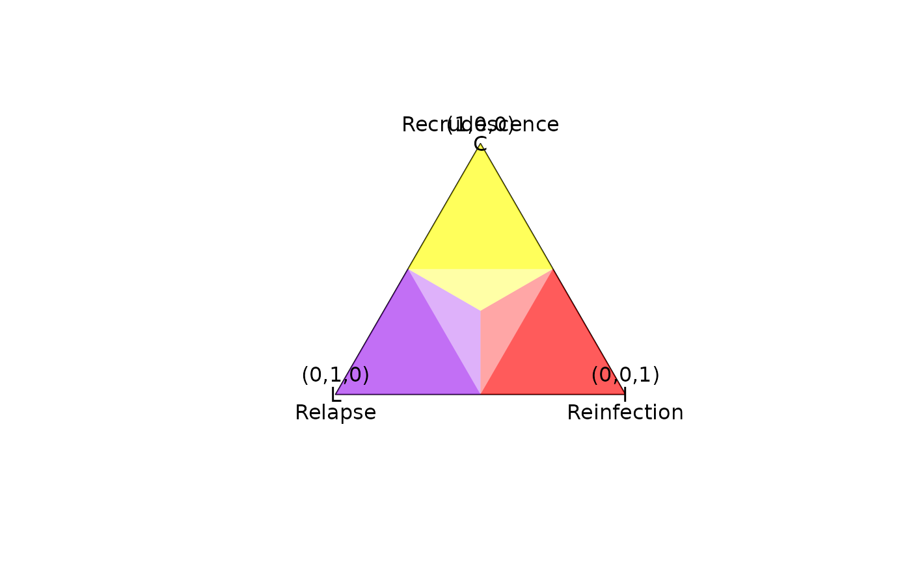

Plots a 2D simplex, a triangle with unit sides centred at the origin, onto
which marginal posterior probabilities of relapse, reinfection and
recrudescence (or any other vector of three numbers in zero to one summing to
one) can be projected; see project2D() and examples below.
Usage
plot_simplex(
v_labels = NULL,
v_cutoff = 0.5,
v_colours = c("yellow", "purple", "red")
)Arguments
- v_labels
A vector of labels that annotate vertices anticlockwise from top. If NULL (default), vertices are not annotated.
- v_cutoff
An arbitrary number between 0.5 and 1 that separates regions of lower and higher probability. Beware the use of cut-offs for probable recrudescence classification and probable reinfection classification; see "Understand posterior estimates".
- v_colours
A vector of colours associated with the vertices anticlockwise from top; see example below.
Examples
# Plot 2D simplex
plot_simplex()
xy <- project2D(v = c("C" = 1, "L" = 0, "I" = 0))
points(x = xy["x"], xy["y"], pch = "C")
graphics::text(x = xy["x"], xy["y"], labels = "(1,0,0)", pos = 3)
xy <- project2D(v = c("C" = 0, "L" = 1, "I" = 0))
points(x = xy["x"], xy["y"], pch = "L")
graphics::text(x = xy["x"], xy["y"], labels = "(0,1,0)", pos = 3)
xy <- project2D(v = c("C" = 0, "L" = 0, "I" = 1))
points(x = xy["x"], xy["y"], pch = "I")
graphics::text(x = xy["x"], xy["y"], labels = "(0,0,1)", pos = 3)

# ==============================================================================
# Given data on an enrollment episode and a recurrence,
# compute the posterior probabilities of the 3Rs and plot the deviation of the
# posterior from the prior
# ==============================================================================
# Some data:
y <- list(list(m1 = c("A", "C"), m2 = c("G", "T")), # Enrollment episode
list(m1 = c("A"), m2 = c("G"))) # Recurrent episode
# Some allele frequencies:
fs <- list(m1 = setNames(c(0.4, 0.6), c("A", "C")),
m2 = setNames(c(0.2, 0.8), c("G", "T")))
# A vector of prior probabilities:
prior <- array(c(0.2, 0.3, 0.5), dim = c(1,3),
dimnames = list(NULL, c("C", "L", "I")))
# Compute posterior probabilities
post <- compute_posterior(y, fs, prior)
#> Number of valid relationship graphs (RGs) is 9
#> ========
#> =========
#> ========
#> =========
#> ========
#> =========
#> ========
#> =========
#> =========
#> |
#> Computing log p(Y|RG) for 9 RGs
#> ========
#> =========
#> ========
#> =========
#> ========
#> =========
#> ========
#> =========
#> =========
#> |
#> Finding log-likelihood of each vector of recurrent states
#> ========
#> =========
#> ========
#> =========
#> ========
#> =========
#> ========
#> =========
#> =========
#> |
#>
# Projev_cutoff marginal prior probabilities onto x and y coordinates:
xy_prior <- project2D(as.vector(prior))
# Projev_cutoff marginal posterior probabilities onto x and y coordinates:
xy_post <- project2D(as.vector(post$marg))
# Plot simplex with probability greater than 0.8 considered relatively
# certain
plot_simplex(colnames(post$marg), 0.8)
# Plot the deviation of the posterior from the prior
arrows(x0 = xy_prior["x"], x1 = xy_post["x"],
y0 = xy_prior["y"], y1 = xy_post["y"], length = 0.1)